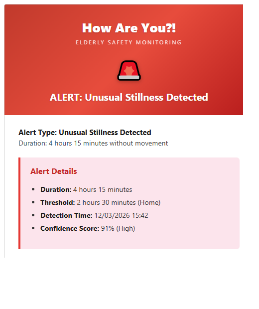
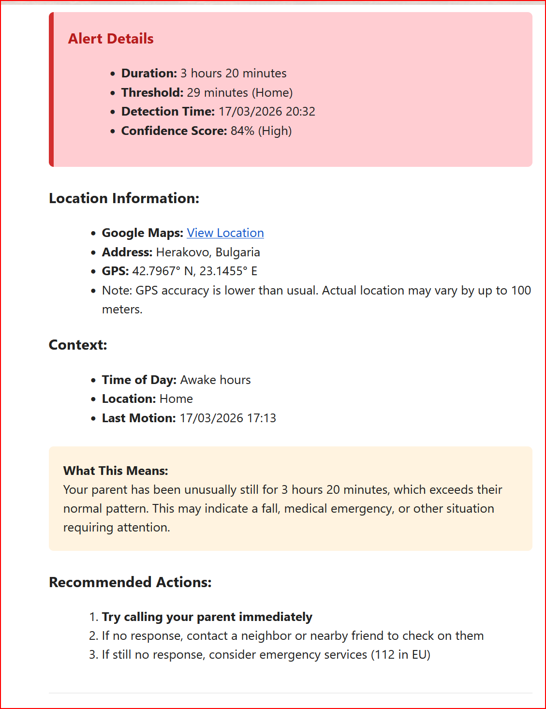

KI-gestützte Sicherheitsüberwachung, die die Routinen Ihrer Eltern lernt und Sie bei Notfällen benachrichtigt - ohne tägliche Kontrollanrufe
21 Tage kostenlos testen · Android 9+ · Ohne Kreditkarte
KI lernt einzigartige Verhaltensmuster in nur einer Woche
Kontinuierlicher Schutz ohne jegliche Interaktion
E-Mail-Benachrichtigungen mit GPS-Koordinaten bei Bedarf
Ihre Daten bleiben auf Ihrem Telefon — AI-Sicherheitsanalyse über sichere verschlüsselte Verbindung
Kostenlose App mit 21-tägiger Testphase. 49 $/Jahr, danach 5 $/Jahr
Von einem kleinen Team mit modernen KI-Werkzeugen entwickelt — keine großen Abteilungen nötig. Keine Server, keine Hardware-Produktion. Die Einsparungen geben wir direkt an Sie weiter.
Keine aufdringlichen Benachrichtigungen an Ihre Eltern
Echte Notfälle, für die die App entwickelt wurde
Ihr Elternteil stürzt und kann das Telefon nicht erreichen. Die App erkennt stundenlange ungewöhnliche Reglosigkeit und benachrichtigt Ihre Familie mit GPS-Standort.
Ein Schlaganfall oder Herzereignis macht sie bewegungsunfähig. Die App bemerkt den plötzlichen Bruch normaler Aktivitätsmuster.
Es ist 11 Uhr und sie wachen normalerweise um 7 auf. Die App kennt ihren Schlafrhythmus und warnt Sie, wenn etwas nicht stimmt.
Sie haben ihre gewohnte Nachbarschaft zu einer ungewöhnlichen Stunde verlassen. Die App hat ihre sicheren Zonen gelernt und bemerkt die Abweichung.
Keine Telefonaktivität seit Stunden. Könnte bedeuten, dass der Akku leer ist — oder dass sie es nicht erreichen können.
Ihr Elternteil ist in den Urlaub gefahren. Statt 7 Tagen Fehlalarmen erhalten Sie eine Benachrichtigung "scheint zu verreisen" und "ist wieder zu Hause" bei der Rückkehr.
Wenn etwas nicht stimmt, erhält Ihre Familie eine detaillierte E-Mail — keine App-Installation auf deren Seite nötig

Klare Alarm-Kopfzeile mit Erkennungsdetails

GPS-Standort, Kontext und empfohlene Maßnahmen
Berechtigungen erteilen, Familien-E-Mails hinzufügen. Dauert nur 3-5 Minuten.
Basisüberwachung ab Tag 1 aktiv. KI personalisiert Schwellenwerte bis Tag 7.
Anomalieerkennung mit automatischen Familienalarmen, wenn etwas nicht stimmt.
Wie Schutz aus der Perspektive Ihrer Familie aussieht
Elena wacht um 7:15 Uhr auf, wie jeden Tag. Die App vermerkt das still. Kein Alarm. Ihre Tochter Katya beginnt ihren Arbeitstag ohne Sorgen.
Elena geht zum Lebensmittelgeschäft in der Nachbarschaft — eine vertraute Route. Die App erkennt ihre sichere Zone. Immer noch kein Alarm. Katya ist in einer Besprechung.
An einem Dienstag wacht Elena nicht bis 10 Uhr auf. Dann 11 Uhr. Die App sendet Katya eine E-Mail: "Ungewöhnliche Schlafdauer erkannt. Letzter bekannter Standort: Zu Hause." Katya ruft eine Nachbarin an, die nach Elena sieht — sie hatte Fieber und konnte nicht aus dem Bett aufstehen. Es geht ihr jetzt gut.
99 Tage vertrauensvolle Stille. 1 Tag lebensrettende Aufmerksamkeit.
Familien in diesen Situationen finden How Are You?! am wertvollsten
Niemand ist da, um zu bemerken, wenn etwas passiert. Ein Sturz um 2 Uhr nachts, ein medizinischer Vorfall tagsüber — die App wacht, wenn niemand sonst es kann.
Sie können nicht kurz vorbeischauen. Vielleicht sind Sie in einer anderen Stadt oder einem anderen Land. Die App überbrückt die Entfernung mit Sicherheitsbewusstsein in Echtzeit.
Sie sehen den Anhänger als Zeichen von Schwäche. Sie wollen sich nicht alt fühlen. How Are You?! läuft auf ihrem Telefon — etwas, das sie bereits jeden Tag bei sich tragen.
Nicht jede Familie erlebt einen Notfall. Manchmal möchte man einfach die ruhige Gewissheit, dass man es erfahren würde, wenn etwas passiert. Das gibt Ihnen diese App.
Ihr Elternteil drückt keine Knöpfe, trägt keine Geräte und beantwortet keine Kontrollanrufe. Sie leben einfach ihr Leben.
21 Tage kostenlos testen. Danach 49 $/Jahr im ersten Jahr, dann nur 5 $/Jahr für KI-Analyse. Jederzeit kündbar.
Alle detaillierten Daten bleiben auf ihrem Telefon. Anonyme Verhaltensübersichten werden sicher analysiert — kein Tracking, keine Überwachung.
Keine generischen Schwellenwerte — die KI lernt die einzigartigen Schlafzeiten, Aktivitätsniveaus und Lieblingsorte Ihres Elternteils.
Im Urlaub? Die App passt sich automatisch an. Keine Fehlalarme, nur eine freundliche "verreist"-Benachrichtigung.
Keine Anhänger, keine Basisstationen, keine Armbänder zum Laden. Ihr vorhandenes Android-Telefon ist alles, was sie brauchen.
Wir haben das entwickelt, weil ein geliebter Mensch in einer schwierigen Situation war und wir uns wünschten, so etwas würde existieren.
Traditionelle Seniorenüberwachung vs. ein intelligenterer Ansatz
Erfordert Knopfdruck. Nutzlos bei Bewusstlosigkeit oder Verwirrung.
Erkennt Notfälle automatisch. Kein Knopf nötig.
Muss täglich geladen werden. Viele Senioren finden sie unbequem oder vergessen sie.
Nutzt ihr vorhandenes Telefon. Nichts Neues zum Tragen oder Laden.
Ihr Elternteil fühlt sich im eigenen Zuhause beobachtet. Aufdringlich.
Völlig unsichtbar. Sie leben einfach normal weiter.
Erzeugt Angst auf beiden Seiten. Sie fühlen sich als Last. Sie geraten in Panik, wenn niemand abnimmt.
Keine Interaktion nötig. Die App meldet sich nur, wenn es wichtig ist.
Traditionelle Dienste kosten 30-50$/Monat — 360-600$ pro Jahr, jedes Jahr.
Kostenlose App, 21 Tage gratis testen. 49 $/Jahr, danach 5 $/Jahr. Gleicher Schutz, ein Bruchteil der Kosten.
Ihre Privatsphäre, Ihre Wahl - immer
Ihre detaillierten Daten bleiben auf dem Gerät — kein Tracking, keine Überwachung, keine persönlichen Daten geteilt
Sehen Sie genau, was die App über Ihre Muster gelernt hat
Die Schaltfläche "Lernen Zurücksetzen" löscht sofort alle Daten - Ihre Wahl
Keine Benachrichtigungen stören Sie im Normalbetrieb


Die App erkennt ungewöhnliche Stillstand (potenzielle Stürze oder medizinische Notfälle), abnormal lange Schlafperioden und Abweichungen von etablierten sicheren Zonen. Sie lernt, was speziell für IHREN Elternteil normal ist.
Während der ersten 7 Tage beobachtet die KI tägliche Muster - wann sie aufwachen, typische Aktivitätsniveaus, regelmäßige Orte. Basisüberwachung ist ab Tag 1 aktiv, aber personalisierte Schwellenwerte werden bis Tag 7 verfeinert.
Ja. Alle detaillierten Daten werden auf dem Gerät gespeichert. Für die Sicherheitsanalyse werden Verhaltensübersichten und allgemeiner Standortkontext sicher an Googles AI gesendet — ähnlich wie bei jeder Karten- oder Wetter-App. Namen oder persönliche Kennungen werden niemals geteilt. Notfallalarme werden per verschlüsselter E-Mail an Familienmitglieder gesendet.
Die KI lernt und passt sich kontinuierlich an. Fehlalarme nehmen mit der Zeit ab, da das System individuelle Muster besser versteht.
Die App ist kostenlos und enthält eine 21-tägige Testphase. Danach kostet das Abo 49 $/Jahr im ersten Jahr und nur 5 $/Jahr ab dem zweiten Jahr (automatische Verlängerung). Keine Hardware, kein Callcenter, keine monatlichen Gebühren — nur intelligente Software auf dem Telefon, das Ihr Elternteil bereits hat.
Sie können Ihr Abonnement jederzeit über Google Play kündigen: Öffnen Sie Google Play > Zahlungen & Abos > Abos > How Are You?! > Kündigen. Nach der Kündigung bleibt die App bis zum Ende des aktuellen Abrechnungszeitraums aktiv. Während der 21-tägigen Testphase können Sie jederzeit kündigen, ohne dass Kosten anfallen.
Wir setzen auf Transparenz. Moderne KI-Entwicklungswerkzeuge ermöglichen es einem kleinen Team, das zu entwickeln und zu pflegen, wofür früher ganze Abteilungen aus Entwicklern, Testern, Designern und Managern nötig waren. Und da alles auf dem Telefon Ihres Elternteils läuft, zahlen wir nicht für Server, Cloud-Speicher oder Rechenzentren. Keine Hardware-Produktion, kein Callcenter. Diese Einsparungen geben wir direkt an Familien weiter.
Jedes Android-Telefon mit Android 9 oder höher.
Ja, absolut. Die Schaltfläche "Lernen Zurücksetzen" ist leicht zugänglich und löscht sofort alle gelernten Daten. Sie können die App auch jederzeit deinstallieren — ohne Fragen.
Die App kann nicht überwachen, wenn das Telefon ausgeschaltet ist. Ein längerer Zeitraum ohne Daten kann jedoch selbst einen Alarm an Familienmitglieder auslösen, der darauf hinweist, dass etwas nicht stimmen könnte.
Die Kern-Sicherheitsüberwachung funktioniert offline. AI-erweiterte Analyse erfordert Internet, aber Sicherheitsgrundlagen (Notfallerkennung) funktionieren immer. Internetverbindung ist erforderlich, um Notfallalarme per E-Mail zu senden.
Die App überwacht den Standort des Telefons. Wenn Ihr Elternteil häufig das Telefon zu Hause lässt, wird dies als normales Verhalten gelernt. Ungewöhnliche Muster (Telefon zu lange stationär) können trotzdem Alarme auslösen.
Android versucht, Hintergrund-Apps zu beenden, um Strom zu sparen. Für eine Sicherheits-App ist dies gefährlich, da die Überwachung gestoppt wird. "Optimierungen ignorieren" teilt Android mit, dass diese App kritisch ist und nicht beendet werden darf.
Einige Hersteller (Samsung, Xiaomi, Huawei, Honor, OPPO) beenden Hintergrund-Apps aggressiv. Die App enthält mehrere Selbstheilungsschichten, die die Überwachung automatisch neu starten. Wenn sie sich nicht selbst wiederherstellen kann, sendet sie eine E-Mail an Ihre Familie und zeigt eine „Tippen zum Beheben"-Benachrichtigung auf dem Telefon an. Um dies zu verhindern: Öffnen Sie die App, gehen Sie zu Einstellungen → Gerätezuverlässigkeit → tippen Sie auf Ihre Telefonmarke für Schritt-für-Schritt-Anleitungen. Größere Android-Updates können diese Einstellungen gelegentlich zurücksetzen — wenn das passiert, erkennt die App das und sendet Ihrer Familie eine E-Mail mit einer 2-Schritte-Anleitung zur Wiederherstellung.
Ja! Die App läuft unauffällig im Hintergrund — die Benachrichtigung ist bewusst lautlos und verborgen, während Sie Ihr Telefon benutzen, damit Sie nicht gestört werden. Zur Überprüfung: Öffnen Sie die App — wenn Sie das Dashboard sehen, ist die Überwachung aktiv.
Diese Warnung ist normal für eine 24/7-Sicherheits-App. Sie bedeutet, dass die App korrekt funktioniert, indem sie Sensoren aktiv hält, um Notfälle zu erkennen. Die App funktioniert einwandfrei mit dieser Warnung. Auf Honor/Huawei-Geräten können Sie sie optional unter Einstellungen > Akku > Energieintensive Eingabeaufforderung stummschalten.
Die App verwendet einen adaptiven Herzschlag, der die Sensoraktivität bei Stillstand reduziert. Typischer Akkuverbrauch beträgt weniger als 1% pro Tag. WLAN-unterstützte Ortung hilft, den GPS-Akkuverbrauch zu reduzieren.
Ja — und Version 2.171.0 hat einmalige Einrichtungsschritte speziell für Pixel und andere Stock-Android-Telefone (Nothing, Motorola, die meisten Carrier-Builds) hinzugefügt. Ab Android 13 sind zwei Akku-Funktionen standardmäßig aktiviert, die Überwachungs-Apps nach etwa drei Monaten ohne Öffnen lautlos beenden: „App-Aktivität pausieren, wenn nicht verwendet" und die adaptive Akkunutzung. Der Einrichtungsablauf führt Sie durch die Deaktivierung beider, sodass die Überwachung zuverlässig weiterläuft. Größere Android-Updates können sie gelegentlich erneut aktivieren — wenn das passiert, erkennt die App die Änderung und sendet Ihrer Familie eine E-Mail mit einer 2-Schritte-Anleitung zur Wiederherstellung.
Öffnen Sie die App und gehen Sie zu Einstellungen → Gerätezuverlässigkeit → tippen Sie auf den Gerätenamen. Der Pixel-spezifische Anleitungsbildschirm führt Sie durch die vier Schritte. Möglicherweise sehen Sie nach dem Update auch eine einmalige Eingabeaufforderung auf dem Dashboard, die denselben Bildschirm automatisch öffnet. Danach ist keine weitere Aktion nötig — und wenn ein künftiges Android-Update die Einstellungen zurücksetzt, erkennt die App das und sendet Ihrer Familie eine E-Mail mit einer 2-Schritte-Anleitung zur Wiederherstellung.
Die App verfügt über eine eingebaute Selbstheilung. Wenn der Telefonhersteller die Überwachung stoppt, versucht die App automatisch, sich über mehrere Wiederherstellungsschichten neu zu starten. Wenn sie sich nicht selbst wiederherstellen kann, sendet sie eine E-Mail an Ihre Familienmitglieder, die erklärt, dass die Überwachung pausiert ist, und bittet sie, die App auf dem Telefon zu öffnen. Auf dem Telefon erscheint auch eine Benachrichtigung mit einem einfachen „Tippen zum Beheben"-Button. Ein Tippen stellt alles wieder her.
Ja, die App verwendet etwa alle 6 Stunden stille Push-Benachrichtigungen für das Überwachungs-Survival. Dies sind KEINE normalen Benachrichtigungen — Ihre Eltern werden NICHTS auf ihrem Telefon sehen. Die Push-Benachrichtigung ist ein technisches Signal, das der App hilft, sich selbst neu zu starten, wenn der Telefonhersteller den Hintergrundüberwachungsdienst gestoppt hat. Dies stellt sicher, dass die App Ihre Eltern weiterhin schützt, auch wenn sie die App wochen- oder monatelang nie öffnen.
Öffnen Sie die App auf dem überwachten Telefon. Sie sehen einen Wiederherstellungsbildschirm, der genau zeigt, was behoben werden muss, mit Schritt-für-Schritt-Anleitungen speziell für die Telefonmarke. Tippen Sie auf den Beheben-Button, folgen Sie den Schritten, und die Überwachung startet automatisch neu. Wenn Sie keinen Zugang zum Telefon haben, bitten Sie die Person, die es hat, die App zu öffnen — ein Tippen genügt.
Android kann Apps, die etwa drei Monate nicht geöffnet wurden, automatisch beenden und ihre Berechtigungen entziehen. Für eine Sicherheits-App, die für jemanden installiert ist, der sie nie öffnet, würde dies die Überwachung nach einigen Monaten lautlos beenden. Während der Einrichtung bittet die App Sie, diese Funktion mit einem Tippen zu deaktivieren. Wenn sie nach einem Systemupdate wieder aktiviert wird, erkennt die App dies und leitet Sie zur Behebung an.
1. Öffnen Sie Android-Einstellungen > Standort und stellen Sie sicher, dass er aktiviert ist. 2. Setzen Sie die Standortgenauigkeit auf "Hohe Genauigkeit". 3. Öffnen Sie die App-Berechtigungen und setzen Sie Standort auf "Immer erlauben". 4. Starten Sie das Telefon neu und warten Sie 5 Minuten. 5. Wenn Sie draußen sind, sorgen Sie für freie Sicht zum Himmel für 2 Minuten.
1. Überprüfen Sie, ob alle Empfänger-E-Mail-Adressen in Einstellungen > Empfänger korrekt sind. 2. Stellen Sie sicher, dass das Telefon aktives Internet hat. 3. Versuchen Sie, einen Testalarm über Einstellungen zu senden. 4. Wenn es immer noch nicht funktioniert, prüfen Sie den Diagnose-Export für Fehlerdetails.
Die App enthält Selbstheilungsschichten, die die Überwachung in den meisten Fällen automatisch neu starten. Zusätzlich arrivehen etwa alle 6 Stunden stille Push-Benachrichtigungen, die bei der Wiederherstellung der Überwachung bei inaktiven Installationen helfen. Wenn sich die Überwachung nicht wiederherstellen kann, erhält Ihre Familie eine E-Mail und eine „Tippen zum Beheben"-Benachrichtigung erscheint auf dem Telefon. Zum Beheben: 1. Öffnen Sie die App — wenn Sie einen Wiederherstellungsbildschirm sehen, tippen Sie auf den Beheben-Button und folgen Sie den Anweisungen für Ihre Telefonmarke. 2. Wenn kein Wiederherstellungsbildschirm erscheint, gehen Sie zu Einstellungen → Gerätezuverlässigkeit → tippen Sie auf Ihre Telefonmarke und folgen Sie den Schritten. 3. Deaktivieren Sie Batterieoptimierung: Einstellungen → Apps → How Are You?! → Akku → Uneingeschränkt. 4. Bei Xiaomi/Huawei/Honor/OPPO: Überprüfen Sie die herstellerspezifischen Energiespareinstellungen.
Das bedeutet, die App hat erkannt, dass eine kritische Berechtigung entzogen wurde oder der Telefonhersteller den Hintergrunddienst gestoppt hat und die App sich nicht automatisch wiederherstellen konnte. Jemand muss die App auf dem überwachten Telefon öffnen. Ein Wiederherstellungsbildschirm zeigt, was nicht stimmt und wie es behoben wird, mit Schritt-für-Schritt-Anleitungen für die jeweilige Telefonmarke. Ein Tippen stellt die Überwachung wieder her. Diese E-Mail wird höchstens einmal pro Tag gesendet, um wiederholte Benachrichtigungen für dasselbe Problem zu vermeiden.
1. Stellen Sie sicher, dass WLAN aktiviert ist - GPS verbraucht weniger Akku mit WLAN-unterstützter Ortung. 2. Die App verbraucht normalerweise weniger als 1% Akku pro Tag. Höherer Verbrauch kann auf GPS-Probleme hinweisen. 3. Bei starker Entladung starten Sie das Telefon neu. 4. Die App reduziert automatisch die Sensoraktivität bei Stillstand, um Akku zu sparen.
Pixel und andere Stock-Android-Telefone haben zwei Akku-Funktionen, die die Überwachung lautlos beenden können: „App-Aktivität pausieren, wenn nicht verwendet" und die adaptive Akkunutzung. Öffnen Sie die App → Einstellungen → Gerätezuverlässigkeit → tippen Sie auf den Gerätenamen und folgen Sie den vier Schritten: (1) deaktivieren Sie „App-Aktivität pausieren, wenn nicht verwendet", (2) setzen Sie die Akkunutzung auf „Uneingeschränkt", (3) bestätigen Sie, dass „Hintergrundeinschränkung" AUS ist, (4) bestätigen Sie erneut, dass die Akku-Optimierung deaktiviert ist. Das Dashboard-Banner sollte innerhalb weniger Minuten grün werden.